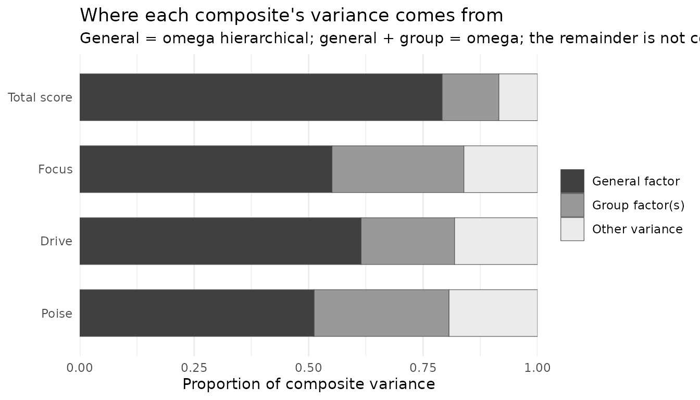

Total and subscale scores: bifactor and higher-order models
Source:vignettes/hierarchical-models.Rmd
hierarchical-models.RmdMany published scales report a total score and several subscale scores. A correlated-factors CFA can show that the subscales are distinguishable, but it cannot say whether a total score is defensible, or how much a subscale score adds once the total is known. Those questions need a model with a general factor and indices that divide each score’s variance between the general factor and the subscales.
This article shows how nomologR fits and evaluates the
two common models for that purpose, and why model fit alone cannot
choose between them.
Two ways to model a general factor
- A higher-order model has first-order factors, one per subscale, whose correlations are explained by a second-order factor. The general factor reaches the items only through the first-order factors.
- A bifactor model has a general factor measured directly by every item, plus a group factor for each subscale. All factors are orthogonal, so each item’s variance divides cleanly between the general factor, its group factor, and error.
The bifactor model dates to Holzinger and Swineford (1937), and Schmid and Leiman (1957) showed how to re-express a higher-order solution in bifactor form. Bifactor models were later rediscovered as a way to evaluate multidimensional measures (Reise, 2012), with indices for judging total and subscale scores (Reise, Bonifay, & Haviland, 2013; Rodriguez, Reise, & Haviland, 2016). The research basis article places these methods in context.
An example with a general factor
The data below are simulated from a bifactor population: twelve items in three four-item subscales, with a general factor that every item reflects and a weaker group factor for each subscale.
simulate_from <- function(sigma, n, seed) {
set.seed(seed)
z <- matrix(rnorm(n * ncol(sigma)), n, ncol(sigma))
dat <- as.data.frame(z %*% chol(sigma))
names(dat) <- colnames(sigma)
dat
}
items <- paste0("x", 1:12)
subscale <- rep(1:3, each = 4)
general_loading <- c(.70, .60, .65, .55, .60, .50, .70, .60, .50, .60, .55, .65)
group_loading <- c(.40, .50, .30, .45, .50, .35, .40, .30, .45, .40, .50, .35)
L <- cbind(
general_loading,
sapply(1:3, function(k) ifelse(subscale == k, group_loading, 0))
)
sigma_bifactor <- L %*% t(L)
diag(sigma_bifactor) <- 1
dimnames(sigma_bifactor) <- list(items, items)
dat <- simulate_from(sigma_bifactor, n = 600, seed = 2026)nomo_model() writes the syntax for all three structures
from the same list of subscales. The researcher chooses the structure;
nomologR never derives one from exploratory results.
subscales <- list(
Focus = paste0("x", 1:4),
Drive = paste0("x", 5:8),
Poise = paste0("x", 9:12)
)
nomo_model(subscales, structure = "bifactor", general = "G")
#> G =~ NA*x1 + x2 + x3 + x4 + x5 + x6 + x7 + x8 + x9 + x10 + x11 + x12
#> Focus =~ NA*x1 + x2 + x3 + x4
#> Drive =~ NA*x5 + x6 + x7 + x8
#> Poise =~ NA*x9 + x10 + x11 + x12
#> G ~~ 1*G
#> Focus ~~ 1*Focus
#> Drive ~~ 1*Drive
#> Poise ~~ 1*Poise
#> G ~~ 0*Focus + 0*Drive + 0*Poise
#> Focus ~~ 0*Drive + 0*Poise
#> Drive ~~ 0*PoiseThe bifactor syntax states its identification explicitly: each factor’s first loading is freed, each factor’s variance is fixed to 1, and every covariance among factors is fixed to 0. A higher-order model with three first-order factors carries a note that matters later:
nomo_model(subscales, structure = "higher_order", general = "G")
#> Focus =~ x1 + x2 + x3 + x4
#> Drive =~ x5 + x6 + x7 + x8
#> Poise =~ x9 + x10 + x11 + x12
#> G =~ NA*Focus + Drive + Poise
#> G ~~ 1*G
#>
#> Identification notes:
#> - With three first-order factors the second-order part is just identified: this model fits exactly as well as the correlated-factors model, so model fit cannot distinguish the two.
correlated <- nomo_cfa(nomo_model(subscales), data = dat)
higher <- nomo_cfa(nomo_model(subscales, "higher_order"), data = dat)
bifactor <- nomo_cfa(nomo_model(subscales, "bifactor"), data = dat)How much of each score is general?
nomo_hierarchical() reads the structure from the fitted
model and reports the indices:
h <- nomo_hierarchical(bifactor)
h
#> <nomo_hierarchical>
#> Bifactor model | general factor: G | group factors: Focus, Drive, Poise
#> Estimand: unit-weighted observed composite
#>
#> Total score
#> # A tibble: 5 × 2
#> index estimate
#> <chr> <dbl>
#> 1 omega_total 0.915
#> 2 omega_hierarchical 0.792
#> 3 omega_hierarchical_relative 0.865
#> 4 ecv 0.676
#> 5 puc 0.727
#>
#> Subscales
#> # A tibble: 3 × 4
#> subscale n_items omega_subscale omega_hierarchical_subscale
#> <chr> <int> <dbl> <dbl>
#> 1 Focus 4 0.839 0.288
#> 2 Drive 4 0.819 0.204
#> 3 Poise 4 0.807 0.295
#>
#> Factor scores
#> # A tibble: 4 × 5
#> factor role factor_determinacy min_competing_r construct_replicability
#> <chr> <chr> <dbl> <dbl> <dbl>
#> 1 G general 0.898 0.612 0.878
#> 2 Focus group 0.709 0.007 0.5
#> 3 Drive group 0.639 -0.185 0.403
#> 4 Poise group 0.699 -0.022 0.485
#>
#> Notes
#> - [review] A bifactor model will usually fit at least as well as correlated-factors or higher-order models of the same items, even when it did not generate the data (Reise, 2012), and a higher-order model is a constrained version of it (Yung, Thissen, & McLeod, 1999). Bonifay, Lane, and Reise (2017) call the bifactor model's tendency to show superior goodness of fit in model comparison studies a particular concern, and say that superior fit may be a symptom of overfitting: modeling not only the trends in the data but also unwanted noise. Murray and Johnson (2013) compared these two structures directly and found the comparison biased in favor of the bifactor model: unless there was essentially no unmodelled complexity, their simulation favored the bifactor model even when a higher-order model generated the data. They concluded that which model to adopt should not rely on which is better fitting. Compare the alternatives with nomo_compare() and choose on substantive grounds, not on fit alone.
#> - [review] Factor determinacy is at or below .90 for G, Focus, Drive, Poise. Gorsuch (1983, p. 260) recommended using factor score estimates only above that value. This is his recommendation reported as context, not a rule applied here; the score may still be usable for some purposes.
#> - [review] Two equally valid sets of factor scores could correlate as low as G (0.61), Focus (0.01), Drive (-0.18), Poise (-0.02). Gorsuch (1983, p. 260) suggested this minimum be above .70. A negative value means two researchers scoring the same data could rank people in opposite orders and both be consistent with the model.
#> - [review] Construct replicability H is below .70 for Focus, Drive, Poise. Hancock and Mueller (2001) proposed .70 as a standard; a factor below it is not well defined by its own indicators and is expected to change across studies. Reported as their standard, not applied as a rule.
#>
#> No index is treated as a pass/fail threshold; see nomo_table(x, "indices").Reading the total score:
- Omega total (0.92) is the proportion of total-score variance explained by all common factors.
- Omega hierarchical (0.79) is the part explained by the general factor alone. It is the index that speaks to interpreting the total score as a measure of one construct.
- Their ratio (0.86) says how much of the total score’s reliable variance is general.
- ECV (0.68) is the share of common item variance the general factor explains, and PUC (0.73) is the share of item correlations influenced only by the general factor.
The subscales tell a different story:
nomo_table(h, "subscales")[, c(
"subscale", "omega_subscale", "omega_hierarchical_subscale"
)]
#> # A tibble: 3 × 3
#> subscale omega_subscale omega_hierarchical_subscale
#> <chr> <dbl> <dbl>
#> 1 Focus 0.839 0.288
#> 2 Drive 0.819 0.204
#> 3 Poise 0.807 0.295Focus has an omega of 0.84, which looks like a reliable subscale. But its omega hierarchical subscale is 0.29: once the general factor is removed, that is the reliable variance specific to Focus. Only 0.34 of a Focus score’s reliable variance is specific to Focus; the rest is the general factor, which the total score already measures. Reise, Bonifay, and Haviland (2013) frame exactly this question: whether subscale scores are justified, and how much reliable variance they add after controlling for the general factor.
The same division is shown for every composite:
plot(h)
nomologR does not turn these indices into verdicts.
Published heuristic values exist, but Reise (2012) notes that no
benchmark value of ECV establishes when a general factor is strong
enough. Whether a subscale score is worth reporting depends on its
intended use, and the indices are the evidence for that decision rather
than the decision itself.
Can you score the factors?
The omega indices describe unit-weighted composites: the sum score a
researcher would actually compute. A different question is how well each
factor can be recovered at all. The factors table
answers it two ways:
nomo_table(h, "factors")
#> # A tibble: 4 × 7
#> factor role n_items factor_determinacy determinacy_r2 min_competing_r
#> <chr> <chr> <int> <dbl> <dbl> <dbl>
#> 1 G general 12 0.898 0.806 0.612
#> 2 Focus group 4 0.709 0.503 0.00660
#> 3 Drive group 4 0.639 0.408 -0.185
#> 4 Poise group 4 0.699 0.489 -0.0222
#> # ℹ 1 more variable: construct_replicability <dbl>factor_determinacy is the correlation between a factor
and its estimated factor score (Beauducel, 2011; Rodriguez, Reise, &
Haviland, 2016). Gorsuch (1983) recommended using factor score estimates
only above .90. min_competing_r is the lowest correlation
two equally valid sets of scores could have. When it is negative, two
researchers scoring the same data with equally defensible methods could
rank people in opposite orders, and both would be consistent with the
model.
construct_replicability, Hancock and Mueller’s (2001) H,
is the proportion of variance in a factor its own indicators could
explain if optimally weighted. They proposed .70 as a standard.
The two indices answer different questions, and the difference is
easy to miss. They are the same quantity when a construct is
unidimensional. Under a bifactor model they are not: determinacy is
computed from the whole reproduced correlation matrix, so a group
factor’s score can borrow the other items to partial out the general
factor, while H sees only that factor’s own loadings and treats the rest
of each item as uncorrelated residual. Rodriguez et al. (2016) state
that the two can differ here and decline to prefer either, so
nomologR reports both and names what each one measures.
Neither threshold is applied as a rule. They are reported as their authors’ recommendations where a value falls below them, in the same way fixed fit-index cutoffs are treated elsewhere in the package.
Comparing structures
The three models can be compared with nomo_compare(),
which requires a rationale and never selects a model:
cmp <- nomo_compare(
correlated, higher, bifactor,
rationale = "Competing structures for the same twelve items.",
origin = "a_priori"
)
comparisons <- nomo_table(cmp, "comparisons")[, c(
"model", "relation", "chisq_diff", "df_diff", "delta_cfi"
)]
comparisons$delta_cfi <- round(comparisons$delta_cfi, 4)
comparisons
#> # A tibble: 2 × 5
#> model relation chisq_diff df_diff delta_cfi
#> <chr> <chr> <dbl> <dbl> <dbl>
#> 1 higher equivalent NA NA 0
#> 2 bifactor less_constrained 23.0 9 0.0047Two features of this table are structural rather than empirical:
- The higher-order model is equivalent to the correlated-factors model: both have chi-square = 72.45 on 51 degrees of freedom. With three first-order factors, the second-order part is just identified, so it imposes no testable constraint. Fit cannot distinguish the two, which is what the note on the syntax warned.
- The bifactor model is less constrained. A higher-order model is a constrained version of the bifactor model (Yung, Thissen, & McLeod, 1999), so the bifactor model can only fit as well or better.
Why fit cannot choose the structure
That last point has a consequence. The next data set is simulated from a higher-order population, so the higher-order model is the true one:
first_order <- c(.70, .65, .60, .75, .70, .60, .65, .70, .55, .70, .65, .60)
second_order <- c(.80, .70, .60)
F <- sapply(1:3, function(k) ifelse(subscale == k, first_order, 0))
phi <- second_order %*% t(second_order)
diag(phi) <- 1
sigma_higher <- F %*% phi %*% t(F)
diag(sigma_higher) <- 1
dimnames(sigma_higher) <- list(items, items)
dat_higher <- simulate_from(sigma_higher, n = 600, seed = 2027)
true_model <- nomo_cfa(nomo_model(subscales, "higher_order"), data = dat_higher)
bifactor_model <- nomo_cfa(nomo_model(subscales, "bifactor"), data = dat_higher)The higher-order model generated these data, yet the bifactor model fits better: chi-square = 38.14 on 42 degrees of freedom, against 42.48 on 51 for the true model. That is not a sign that the bifactor model is correct. Its extra parameters absorb sampling noise, and it will usually fit at least as well as correlated-factors or higher-order models of the same items (Reise, 2012).
So the choice between structures has to rest on theory: is there a construct that every item measures directly, with subscale content as a secondary source? Or is the general construct what the subscales have in common? Fit comparison can reveal a structure that clearly does not work, but it cannot make this choice.
Higher-order models and Schmid-Leiman
nomo_hierarchical() also evaluates higher-order models.
There the group sources are the first-order factors’ disturbances, and
the item loadings are the Schmid-Leiman decomposition of the
higher-order solution, which is exact for a confirmatory model:
h_higher <- nomo_hierarchical(true_model)
nomo_table(h_higher, "indices")[, c("index", "estimate")]
#> # A tibble: 5 × 2
#> index estimate
#> <chr> <dbl>
#> 1 omega_total 0.845
#> 2 omega_hierarchical 0.617
#> 3 omega_hierarchical_relative 0.730
#> 4 ecv 0.481
#> 5 puc 0.727
head(nomo_table(h_higher, "loadings"), 4)
#> # A tibble: 4 × 6
#> item subscale general_loading group_loading communality item_ecv
#> <chr> <chr> <dbl> <dbl> <dbl> <dbl>
#> 1 x1 Focus 0.515 0.433 0.453 0.586
#> 2 x2 Focus 0.482 0.405 0.396 0.586
#> 3 x3 Focus 0.477 0.401 0.388 0.586
#> 4 x4 Focus 0.609 0.512 0.633 0.586Each item’s general loading is its first-order loading multiplied by
its factor’s second-order loading. Every item in a subscale therefore
has the same ratio of general to group loading, which is why
item_ecv is identical for all four Focus items. That
proportionality is the constraint that distinguishes a higher-order
model from a bifactor model, where each item’s split between general and
group variance is free.
Ordered indicators
When indicators are declared ordered, nomo_cfa() fits
the model with WLSMV and nomo_hierarchical() computes the
indices on the latent-response scale. Those omegas are upper bounds on
the reliability of the observed ordinal sum score, and the output says
so. The observed ordinal-scale versions are not provided.
What nomologR does not do
- It does not generate a bifactor or higher-order structure from exploratory results. The researcher specifies the structure.
- It does not apply pass/fail thresholds to omega hierarchical, ECV, or PUC.
- It does not choose between correlated-factors, higher-order, and bifactor models, and it discloses that fit comparisons favor the bifactor model.
- It evaluates single-group, single-level models, and refuses models whose general and group factors are allowed to correlate, because variance cannot then be attributed to a source.
Every method used here is listed, with references, by
nomo_methods():
nomo_methods(h)[, c("method", "lineage", "role")]
#> # A tibble: 7 × 3
#> method lineage role
#> <chr> <chr> <chr>
#> 1 Bifactor measurement model contemporary primary
#> 2 Omega hierarchical contemporary primary
#> 3 Omega hierarchical subscale contemporary supporting
#> 4 Explained common variance contemporary supporting
#> 5 Factor determinacy contemporary supporting
#> 6 Construct replicability (H) contemporary supporting
#> 7 Percentage of uncontaminated correlations contemporary supportingReferences
Holzinger, K. J., & Swineford, F. (1937). The bi-factor method. Psychometrika, 2(1), 41–54. https://doi.org/10.1007/BF02287965
Reise, S. P. (2012). The rediscovery of bifactor measurement models. Multivariate Behavioral Research, 47(5), 667–696. https://doi.org/10.1080/00273171.2012.715555
Reise, S. P., Bonifay, W. E., & Haviland, M. G. (2013). Scoring and modeling psychological measures in the presence of multidimensionality. Journal of Personality Assessment, 95(2), 129–140. https://doi.org/10.1080/00223891.2012.725437
Rodriguez, A., Reise, S. P., & Haviland, M. G. (2016). Evaluating bifactor models: Calculating and interpreting statistical indices. Psychological Methods, 21(2), 137–150. https://doi.org/10.1037/met0000045
Schmid, J., & Leiman, J. M. (1957). The development of hierarchical factor solutions. Psychometrika, 22(1), 53–61. https://doi.org/10.1007/BF02289209
Yung, Y.-F., Thissen, D., & McLeod, L. D. (1999). On the relationship between the higher-order factor model and the hierarchical factor model. Psychometrika, 64(2), 113–128. https://doi.org/10.1007/BF02294531